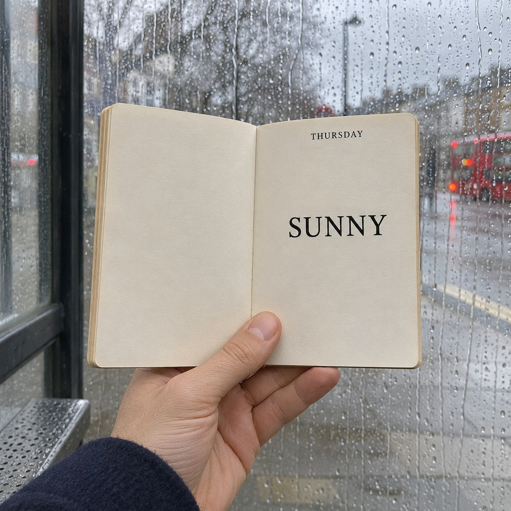
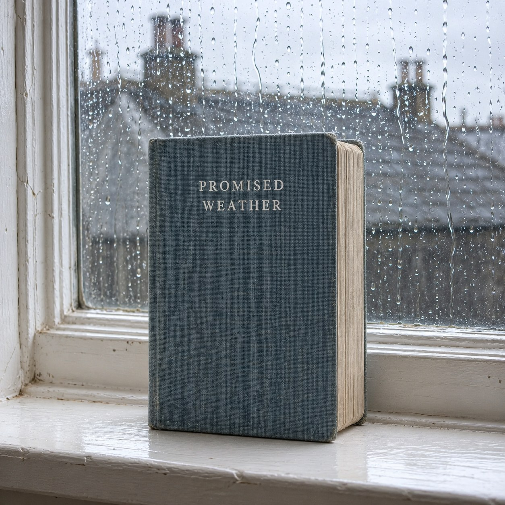

Promised Weather


For a year, every morning, I wrote down the forecast for the day a week ahead. Not today's weather, and not tomorrow's. The weather of a day that did not exist yet, as it was described seven days before it came.
This book holds those descriptions and nothing else, one day to a page. Tuesday: sunny, light winds. Wednesday: rain by evening. A whole year, each day written down while it was still only a promise.
Read on the day itself, the page is often wrong. The sun it promised does not come, or comes late, or goes to the next town. But it was never a lie. For a week, that sunny Tuesday was real enough to plan around. Picnics were moved to it. A fence went unpainted to wait for it. A great many people carried the wrong coat because of it.
Aristotle asked whether a sentence about a sea battle tomorrow is true or false today, and decided it was not yet either. These pages are made of such sentences. Each one waited, undecided, for a week. Then for one day it became true or false. Then the day ended, and it went back to being only a sentence, about a day no one will see again.
In 1861 Robert FitzRoy began printing forecasts of the weather in The Times. He insisted they were not prophecies, only opinions reached by calculation. When they failed he was mocked, as if the sky had broken a promise and he had been the one to make it.
Put the pages together and they make a year that never happened, a little brighter and more orderly than the real one. Nobody lived in it. Everybody planned for it.